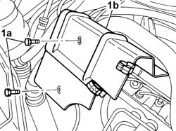

5530A50 ALTERNATOR GUARD - R & R.
- Path
- Procedures > 55 ELECTRICAL EQUIPMENT > 5530 CURRENT GENERATOR > 5530A ALTERNATOR AND COMPONENTS > 5530A50 ALTERNATOR GUARD - R & R.
- Kind
- repair procedure (removal / refitting; the operation number is the code)
- Applies to
- engines: 2.0 16V; all production periods
- Interactive page
- https://sloeber94.github.io/elrnDB-fDct/en/#/244001362
Applies to: engines: 2.0 16V; all production periods
 Removing
Removing
 Refitting
Refitting- Move the pipes secured to the clips on the alternator guard.
1. Undo retaining bolts (1a) and remove the alternator guard (1b).

Applies to: engines: 2.0 16V; all production periods
Refitting
Removing- Position the alternator guard in its seat.
- Tighten the retaining bolts.
- Fit the pipes moved aside previously and refasten using the clips.